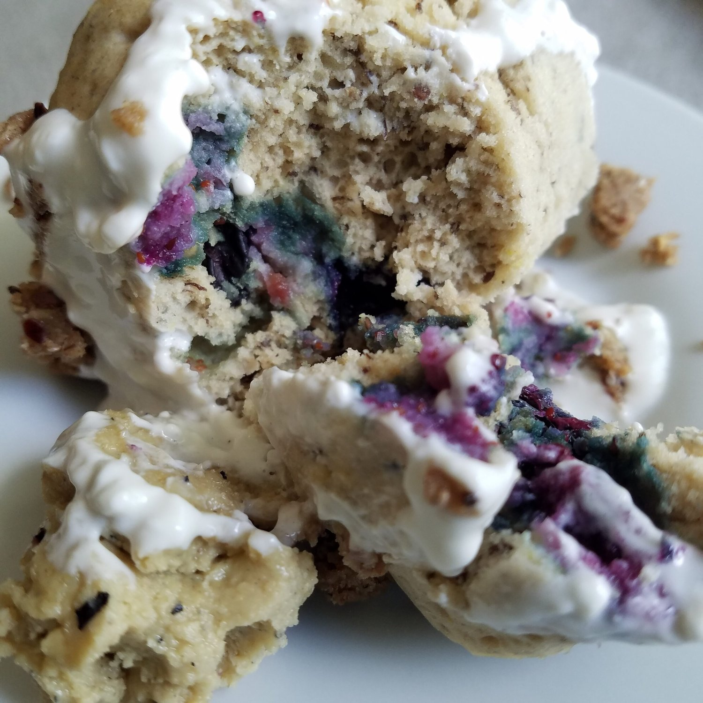
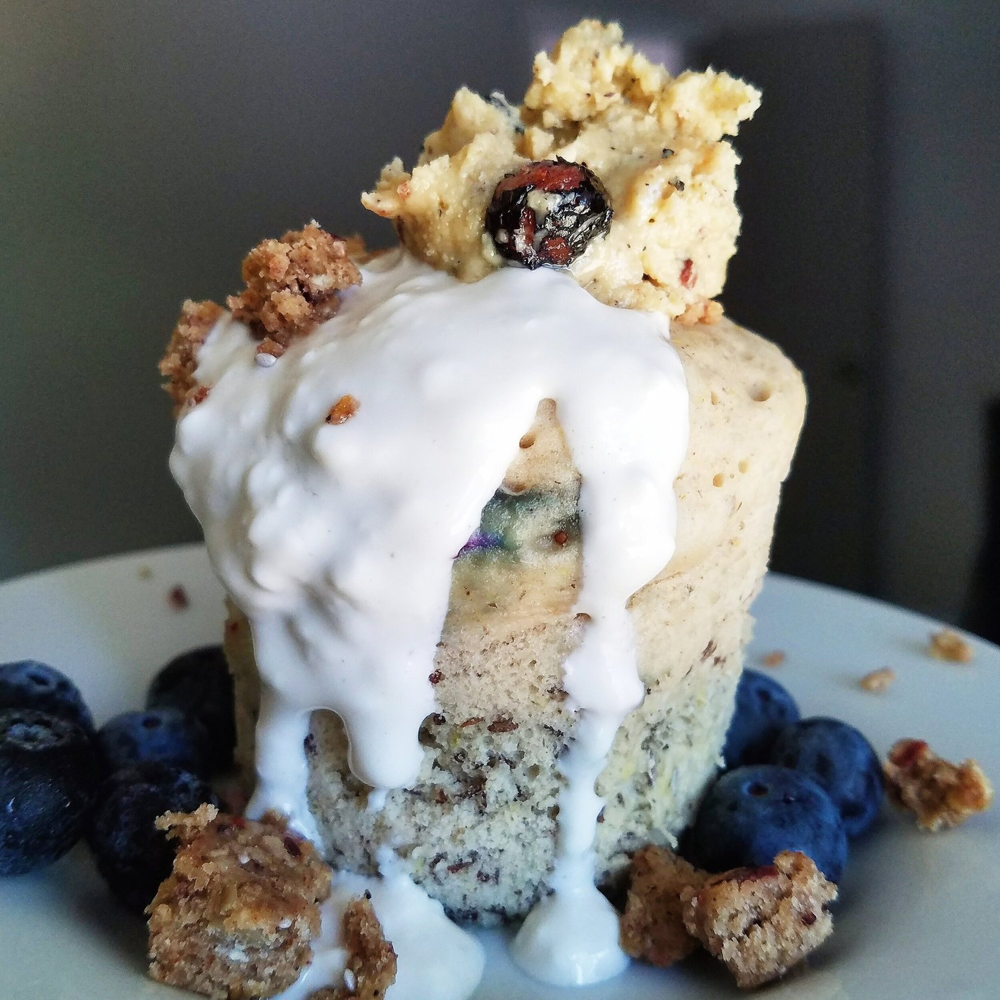

Vegan Blueberry Muffin Mugcake (gluten free)


Vegan Blueberry Muffin Mugcake that's as easy as 1-2-3!! This sweet, fluffy mugcake is completely vegan, gluten free, and sugar free! It takes less than a minute to make, so it's perfect for a quick dessert or even as a breakfast muffin while you're in a hurry.
Another day, another mugcake mini party. Occasion this time: REUNITED WITH PESTO!! I got my car back Monday, still had to replace two tires and do some catch-up errands, then I got Pesto on Tuesday! I missed my little man more than I missed my car to be honest. It got so lonely and I thought of him every day :( I think hes gonna be sick of me and all my kisses. I can't stop showering him with love hahah. It feels so good to have him again, everything feels right in the world. I filmed a short video of his reaction. It was so cute. It was a mixture of confused and shocked. He immediately ran to me, then he was so quiet and just sat next to me or would get up on my shoulders to hug. It was adorable and made my heart hurt. :(
This week will be a TON of catch up. I get to finally do all of the things I've had to put off for weeks. Total craziness. I have my final costs from the crash damage repair, and....it did damage on my wallet XD can I cry. It's okay.....unexpected things happened. I just have to cut back drastically on spending and try to compensate for a while.
Now...time to EAT CAKE!! Vegan blueberry muffin mugcake topped with a "cheesecake" cream, blueberries, cranberry acai oat bar, and a hunky spoonful of blueberry cinnamon roll cashew butter. The texture is amazing. I can't get over how fluffy buckwheat flour gets!! When I had my own business, buckwheat was one of my secret ingredients ;) so this stuff is legit. Really makes vegan mugcakes possible. The blueberries add bursts of flavor and sweetness. Possible my favorite variety of vegan mugcake I've made so far!! I want to try other fruits inside now; I don't know why I didn't sooner!
Try this delicious vegan blueberry muffin mugcake and experience the magic yourself! This 1-minute single serve cake is gluten free, sugar free, and a great healthy alternative!!
Vegan Blueberry Muffin Mugcake
-
1/4 cup buckwheat flour
-
1/2 TBSP ground flax seeds
-
1/4 cup almond milk
-
1/4 tsp baking powder
-
1/8 tsp baking soda
-
1 stevia packet
-
handful of blueberries
Mix all of the ingredients in a mug or small bowl. Microwave 45-60 seconds until the center is cooked through, and you're done!! Get crazy with toppings.
For the cheesecake cream, mix 2 tbsp tofutti vegan cream cheese, 2 tsp almond milk, and 6 vanilla stevia drops.